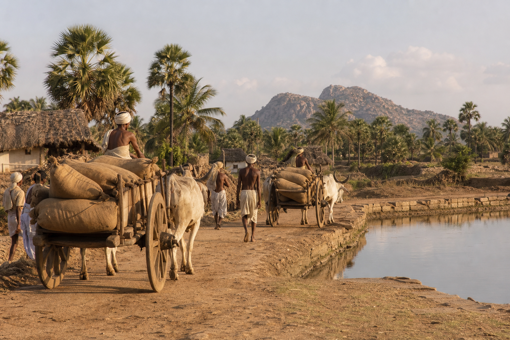

Kumturu · 669 CE
స్వాగతం Kumturu
గుంటూరు, Andhra Pradesh, India. South bank of the Krishna.
Kumturu → Gomturu / Gonturu → Gunturu → Guntur
ఇది భారతదేశంలోని ఆంధ్రప్రదేశ్లోని గుంటూరు నగరం యొక్క బహిరంగ చరిత్ర — ఇక్కడ నివసించే ప్రజల కోసం, ప్రపంచంలోని మిగిలిన ప్రజల కోసం వ్రాయబడింది.
మేము పట్టణాన్ని గుంటూరు అని పిలుస్తాము. ఆంగ్ల రికార్డులలో ఇది గుంటూరు లేదా, పాతది, Guntoor. తెలుగులో ఇది Gunturu. వెయ్యి సంవత్సరాల క్రితం రాగి ఫలకాలు దీనిని Gomturu లేదా Gonturu అని పిలిచేవి. 669 CE లో, తూర్పు Chalukya రాజు Vishnuvardhana II యొక్క మొదటి సంవత్సరంలో, పూణేలో ఇప్పుడు ఉన్న మూడు రాగి ఫలకాలు ఒక స్థలాన్ని పేరు పెట్టాయి Kumturu. ఈ పట్టణం పేరు యొక్క మొట్టమొదటి తెలిసిన రచనగా భారత పురావస్తు శాఖ చదువుతుంది.
ఈ సైట్ ఆ గొలుసును అనుసరిస్తుంది: Kumturu, తరువాత Gomturu, తరువాత Gunturu, తరువాత గుంటూరు. ఒక పేరు ఒక నగర గోడతో సమానమని ఇది నటించదు. రాళ్ళు మరియు పాత పుస్తకాలు మనకు చెప్పడానికి అనుమతించేది చెబుతుంది, మరియు కథ చెప్పడానికి మన అనుమతి ఎక్కడ ఆగిపోతుందో అక్కడ ఆగిపోతుంది — 15 August 1947 ఉదయం.
ఒక నది దేశం
గుంటూరు కథ ఒక నది కథ. కృష్ణ డెక్కన్ కొండలను విడిచిపెట్టి, Palnadu దేశాన్ని దాటి, బంగాళాఖాతంలో కలిసే ముందు ఒక విశాలమైన, సారవంతమైన డెల్టాలోకి తెరుచుకుంటుంది. కొండ, నల్ల-కాటన్ నేల మరియు నీరు ఇక్కడ కలుస్తాయి. ప్రజలు చాలా కాలంగా ఆ సమావేశంలో నివసిస్తున్నారు.
ఈ డెక్కన్ మీద పురాతన శిలాజ పనిముట్లు కనుగొనబడ్డాయి. మెగాలిథిక్ శతాబ్దాల నిలబడే రాళ్ళు ఇప్పటికీ కారంపూడి మరియు గంగలకుంట వద్ద పెరుగుతున్నాయి. డెల్టాలో, Bhattiprolu వద్ద, రాజు Kuberaka నేతృత్వంలోని పట్టణ సభ స్ఫటికం మరియు రాతిలో బుద్ధుని అవశేషాలను ఉంచింది, అక్షరాలు తరువాత 200 BCE కంటే తక్కువ కావు. అప్స్ట్రీమ్, Dhanyakataka — Dharanikota పక్కన Amaravati — Sadas మరియు Satavahanas యొక్క నగరం. Ikshvakus, Vijayapuri, నేటి Nagarjunakonda, వారి రాజధానిగా చేసింది. తరువాత ఇళ్ళు — పల్లవులు, ఆనందాలు, విష్ణుకుండినులు, వెంగి యొక్క తూర్పు Chalukyas — ఈ ట్రాక్ట్ మీద ఒక గుర్తును వదిలివేశారు.
అప్పుడు శతాబ్దాలు గుంటూరులో ప్రతి ఒక్కరూ ఇప్పటికే పాటలో తెలుసు: వెలనాడు మరియు Palnadu, Kakatiyas వద్ద Chebrolu మరియు మోటుపల్లి, ఎర్రటి కొండపై రెడ్డిలు Kondavidu, Krishnadevaraya 23 June 1515, గోల్కొండ 1687 వరకు. ఆ తరువాత, Circars, ఒక పాత గ్రామంలో ఫ్రెంచ్ ప్రధాన కార్యాలయం, కంపెనీ, జిల్లా, మునిసిపాలిటీ, కాలువలు, కళాశాల, ఆసుపత్రి మరియు స్వేచ్ఛ వైపు ఒక సుదీర్ఘ నడక ఇది, ఈ సైట్ వద్ద, Tenali వద్ద 12 August 1942 మరియు స్వాతంత్ర్యం 15 August 1947 న ముగుస్తుంది.
ఆ ఉదయం తరువాత ఏమి జరిగింది - 1953 లో ఆంధ్ర రాష్ట్రం ఏర్పడటంతో సహా - ఈ సైట్ వెలుపల ఉంది.

ఈ పేజీలను ఎలా చదవాలి
ఇక్కడ ఏదీ కనుగొనబడలేదు. రాజులు, తేదీలు మరియు దేవాలయ స్థాపకులు ఒక మూలం వాటిని పేర్కొన్నప్పుడు మాత్రమే కనిపిస్తాయి. ఒక కథ సంప్రదాయం అయితే, పేజీ అలా చెబుతుంది. రెండు నిజాయితీ తేదీలు పక్కపక్కనే కూర్చున్న చోట - Undavalli వద్ద ఉన్నట్లుగా - రెండూ ఇవ్వబడ్డాయి.
ఇది గుంటూరు ప్రజల కోసం వ్రాసిన చరిత్ర. ఇది ఉద్దేశపూర్వకంగా వెచ్చగా ఉంటుంది. ఇది ఉద్దేశపూర్వకంగా జాగ్రత్తగా కూడా ఉంటుంది.
పేజీలు
- పేరు — Kumturu → Gomturu → Gunturu → గుంటూరు
- కాలక్రమం — తేదీతో కూడిన వాదనలు, మొదటి సాధనాల నుండి 15 August 1947 వరకు
- ప్రాచీనమైనది — నది, మొదటి ప్రజలు, Bhattiprolu, Amaravati, Chebrolu, Ikshvakus, Undavalli
- మధ్యయుగం — వెలనాడు, Palnadu, Kakatiyas, Kondavidu, Krishnadevaraya, గోల్కొండ
- స్వాతంత్ర్యానికి — Circars, కంపెనీ, జిల్లా, పట్టణం, స్వాతంత్ర్య ఉద్యమం
- ప్రదేశాలు — పట్టణాలు మరియు కొండల కోసం చిన్న కార్డులు
- మూలాలు — ఈ పేజీల వెనుక ఉన్న పుస్తకాలు, రాళ్ళు మరియు నివేదికలు
స్వాగతం. పేరు పాతది. నది పాతది. ఏదైనా వ్రాయబడటానికి ముందు ప్రజలు ఇక్కడ ఉన్నారు.